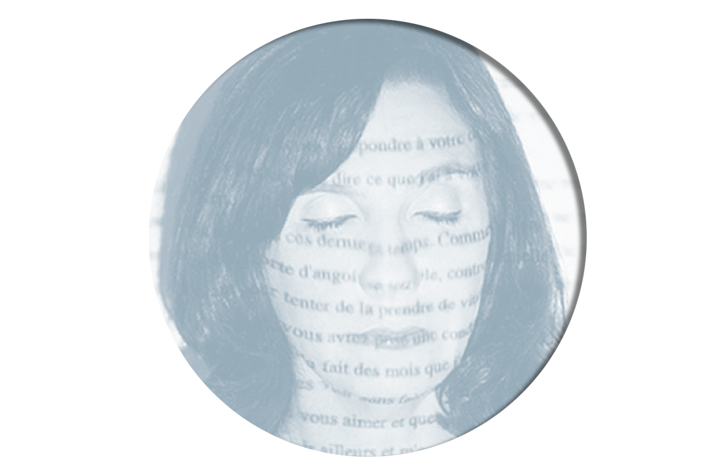
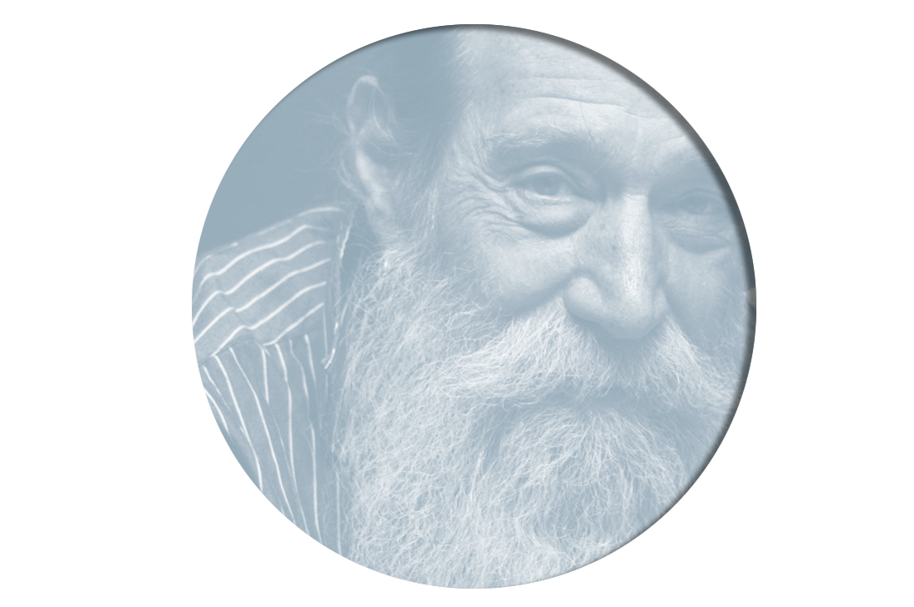
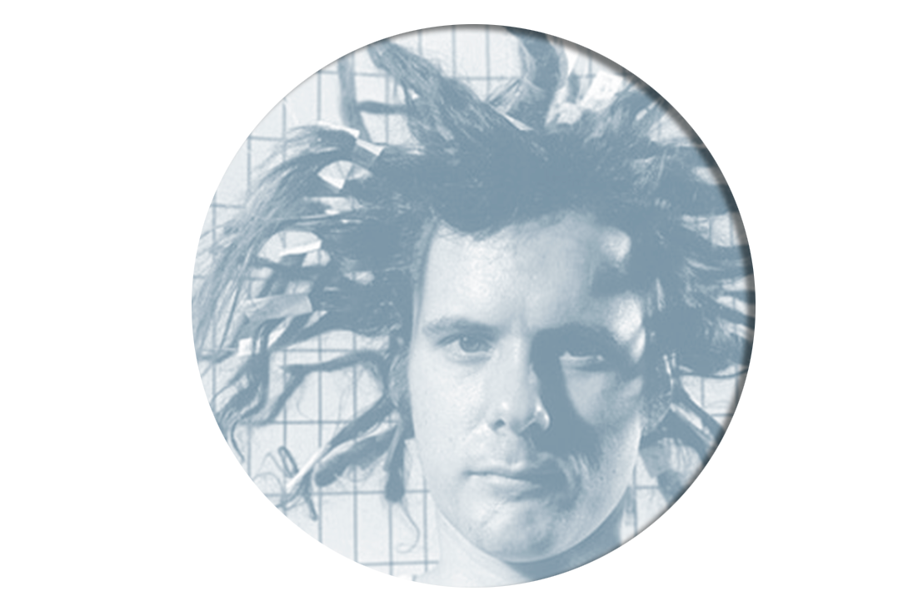

Artists Collection


Sophie Calle
Lawrence Weiner
Gordon Matta-Clark

Sophie Calle is a French artist who works with photographs and performances, placing herself in situations almost as if she and the people she encounters were fictional. She also imposes elements of her own life onto public places creating a personal narrative where she is both author and character. She has been called a detective and a voyeur and her pieces involve serious investigations as well as natural curiousity.
Influential Conceptual artist Lawrence Weiner is known for his language-based sculpture and works pursuing inquiries into language and a radical redefinition of the artist/viewer relationship. Considering language to be a sculptural material and believing that a construction in language can function as sculpture as adequately as a fabricated object, Weiner's works operate beyond the specificity and constraints of traditional presentation.
Born in New York in 1943, Gordon Matta-Clark is widely considered one of the most influential artists working in the 1970s. He was a key contributor to the activity and growth of the New York art world in SoHo from the late 1960s until his untimely death in 1978.